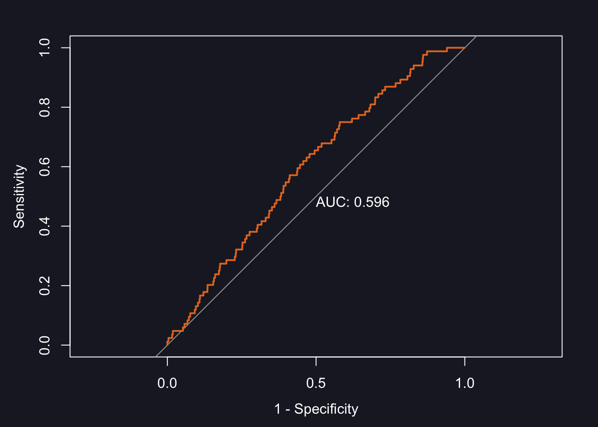

Model Fit in Binary Response Models9
How to Measure Model Fit
There are quite a few model fit measures around for binary response models, such as pseudo R-Squared and the Akaike Information Criterion (AIC). What I am going to present here, however, is the so-called ROC curve, as I personally really don’t like the aforementioned measures.
What is it?
The ROC Curve
YouTube link to follow
The principle idea of ROC is to determine how well our model is able to separate cases into the two categories of our dependent variable. It approaches this question by comparing the actual observed values of the dependent variable with the values the model would predict, given the values of the independent variables.
Consider Figure 23 a). On the x-axis you see eight observations, marked as coloured circles. Red circles represent countries which are dictatorships, and orange ones democracies. They are sorted by their respective level of per capita GDP. Now suppose that the displayed CDF is the results of a model we have estimated. With a cut off point \(\tau=0.5\) we would correctly predict the group of four observations on the left to be dictatorships. They are True Negatives (TN). The group on the right would be correctly predicted as democracies, these are True Positives (TP). We have no incorrectly classified cases; our model has been able to separate cases perfectly. You can see this represented in the form of distributions in panel b).

Figure 23: Perfect Separation
As you well know by now, the real world is oddly deficient in achieving perfection such as this. We will observe both poor democracies, and rich dictatorships. This scenario is shown in Figure 24 a).

Figure 24: Overlap
According to the CDF we would predict the poor democracy as a dictatorship. It would be a False Negative (FN). Conversely, we would predict the rich dictatorship as a democracy and would obtain a False Positive (FP). The distribution of cases in Figure 24 b) is not as clearly separated any more as in Figure 23 b). Now they overlap, leading to incorrect classifications. These are marked accordingly in Figure 25. As we are no longer operating in a world in which we only have TNs and TPs, I think we can all agree that our model fit is no longer as good as in Figure 23.

Figure 25: False Negatives and False Positives
But there is another issue: whilst setting \(\tau\) at 0.5 makes intuitive sense, there is nothing preventing us from shifting \(\tau\) around. Indeed, the number of FPs and FNs very much depends on where we place our cut-off point. For example, if we don’t want any FNs, then we just have to shift \(\tau\) sufficiently downwards. Or if we want to avoid FPs we only need to move it far enough upwards. I have illustrated this in Figure 26 a) and b), respectively.

Figure 26: Shifting \(\tau\)
These are only three options of placing the threshold. But we have a total of eight observations which means that there are nine potential positions for the cut-off point with each leading to a different conclusion of how well our model fits the observed data. Let’s go through this more systematically and start by placing \(\tau\) at the very bottom. Because the number of TNs, TPs, FNs, and FPs will only change at the “next” observation we only need to shift as many times as there are observations. For each shift we record the values of all four quantities in a crosstabulation which is displayed in the following table:
| Actual | |||
|---|---|---|---|
| Democracy | Dictatorship | ||
| Predicted | |||
| Democracy | True Positive | False Positive | |
| Dictatorship | False Negative | True Negative | |
These tables are useful in their own right, but since we will end up with as many of them as there are observations, this can quickly get very messy. There are only eight observations here, but imagine doing these for the world data set with 190 observationsWe therefore need to find a way to condense the information contained in each of the n confusion matrices into a single measure. If you look closely, you will see that TNs and FPs form a close relationship: if we shift up \(\tau\) in Figure 26 a) we are reducing the number of FPs and obtain more TNs. As TPs relate in the same way to FNs, we can quantify their respective relationships in the following rates:
\[\begin{equation} \text{False Positive Rate}=\text{Sensitivity}=\frac{\text{False Positives}}{\text{False Positives}+\text{True Negatives}} \end{equation}\]
In our case you can think of the False Positive Rate (FPR) as the proportion of incorrectly specified dictatorships.
\[\begin{align} \text{True Positive Rate}&=1-\text{Specificity}=\frac{\text{True Positives}}{\text{True Positives}+\text{False Negatives}}\\[10pt] \text{Specificity} &=1-\text{True Positive Rate}=1-\frac{\text{TP}}{\text{TP}+\text{FN}} \nonumber \end{align}\]
For our example the True Positive Rate (TPR) represents the proportion of correctly specified democracies. If we calculate these rates for each of our n confusion matrices, we are already reducing four quantities into two. Let’s do it. To provide a visual aid in this rather laborious process, I have created Figure 27 which depicts all eight shifts.

Figure 27: Towards the ROC Curve
The following table displays the confusion matrix for each of the panels in Figure 27, as well as the respective TPR and FPR (you are welcome).
| a) | Actual | b) | Actual | |||
|---|---|---|---|---|---|---|
| Dem | Dic | Dem | Dic | |||
| Pred. | Dem | TP=4 | FP=4 | Dem | TP=4 | FP=3 |
| Dic | FN=0 | TN=0 | Dic | FN=0 | TN=1 | |
| TPR=1 | FPR=1 | TPR=1 | FPR=0.75 | |||
| c) | Actual | d) | Actual | |||
| Dem | Dic | Dem | Dic | |||
| Pred. | Dem | TP=4 | FP=2 | Dem | TP=3 | FP=2 |
| Dic | FN=0 | TN=2 | Dic | FN=1 | TN=2 | |
| TPR=1 | FPR=0.5 | TPR=0.75 | FPR=0.5 | |||
| e) | Actual | f) | Actual | |||
| Dem | Dic | Dem | Dic | |||
| Pred. | Dem | TP=3 | FP=1 | Dem | TP=3 | FP=0 |
| Dic | FN=1 | TN=3 | Dic | FN=1 | TN=4 | |
| TPR=0.75 | FPR=0.25 | TPR=0.75 | FPR=0 | |||
| g) | Actual | h) | Actual | |||
| Dem | Dic | Dem | Dic | |||
| Pred. | Dem | TP=2 | FP=0 | Dem | TP=1 | FP=0 |
| Dic | FN=2 | TN=4 | Dic | FN=3 | TN=4 | |
| TPR=0.5 | FPR=0 | TPR=0.25 | FPR=0 | |||
| i) | Actual | |||||
| Dem | Dic | |||||
| Pred. | Dem | TP=0 | FP=0 | |||
| Dic | FN=4 | TN=4 | ||||
| TPR=0 | FPR=0 | |||||
As we only need the TPRs and FPRs going forward, it makes sense to collect these in their own little table:
| panel | TPR | FPR |
|---|---|---|
| a | 1.00 | 1.00 |
| b | 1.00 | 0.75 |
| c | 1.00 | 0.50 |
| d | 0.75 | 0.50 |
| e | 0.75 | 0.25 |
| f | 0.75 | 0.00 |
| g | 0.50 | 0.00 |
| h | 0.25 | 0.00 |
| i | 0.00 | 0.00 |
We are nearly there! The last step is to display all these values in the form of a curve with the TPR on the y-axis, and the FPR on the x-axis. You can see the result – the ROC curve – in Figure 28 a).

Figure 28: ROC Curve
Note that I have added a diagonal where TPR = FPR. This is sometimes described as a model without independent variables. I like to think of the line as the graphical point where our model would not be able to separate between the two categories, at all. The further the ROC curve is away from the diagonal, the better our model is at separating the two categories. But there are two sides to the diagonal. We want it to be above the diagonal, as here the model is predicting 0s as 0s and 1s as 1s. Underneath, the prediction is inverse and 0s are predicted as 1s, and 1s are predicted as 0s.
To summarize the position of the curve into a numerical expression, the Area Under Curve (AUC) is used, as shown in Figure 28 b). If the area is 100% we are correctly predicting everything. At 50% the model is incapable of separation, and at 0% the model gets everything wrong. This is very useful to compare different models.
R
How do you do all of this in R? Let’s start with the simple emergence model. In order to calculate a ROC curve, we need a new package, called pROC. Install it and load it.
To calculate the ROC curve, we need a few steps:
prob_em <- predict(emergence, type="response")
world_democ0$prob_em <- unlist(prob_em)
roc1 <- roc(world_democ0$democracy, world_democ0$prob_em)
auc(roc1)
Area under the curve: 0.5234What does each line do?
- predict the probability of democratic emergence for each observation (country year) and store them in a new vector called
prob_em. - add the vector
prob_emto the data frameworld_democ0. In order to do this, we need tounlistthe values in theprob_emvector. - we then call the
rocfunction inw hich we compare the predicted probabilities (world_democ0$prob_em) with the actual, observed regime type (world_democ0$democracy) and store the result in an object calledroc - as a last step we calculate the area under the curve with the
auc()function
But we can also plot the ROC curve:
Note that print.auc=TRUE prints the numerical value into this plot. You can suppress it by setting it to FALSE.
Let’s follow this procedure for the other models.
Emergence: Full Model
prob_em_full <- predict(emergence_full, type="response")
world_democ0$prob_em_full <- unlist(prob_em_full)
roc2 <- roc(world_democ0$democracy, world_democ0$prob_em_full)
auc(roc2)
Area under the curve: 0.596

Including ROC in modelsummary
When I introduced you to modelsummary in Week 3, I mentioned that we will be adding a model fit measure to the results table in Week 7. This model fit measure is the AUC. A properly formatted table summarising the results of all four models we have calculated would look like this:
| Dependent Variable: Democracy |
||||
|---|---|---|---|---|
| Emergence | Survival | |||
| Classical | New | Classical | New | |
| + p < 0.1, * p < 0.05, ** p < 0.01, *** p < 0.001 | ||||
| per capita GDP (lagged) | -0.000* | -0.000** | 0.000*** | 0.000** |
| (0.000) | (0.000) | (0.000) | (0.000) | |
| Life Expectancy (lagged) | 0.015* | 0.008 | ||
| (0.007) | (0.011) | |||
| Gross Primary Enrollment (lagged) | -0.001 | 0.005 | ||
| (0.002) | (0.003) | |||
| Intercept | -1.983*** | -2.705*** | 1.637*** | 0.801 |
| (0.047) | (0.339) | (0.076) | (0.584) | |
| ROC Curve | 0.523 | 0.596 | 0.836 | 0.822 |
| Num.Obs. | 4652 | 3351 | 4616 | 3610 |
How did I get this table? We start again by loading the packages modelsummary and tinytable.
Then we store our models in a list
models <- list(
"Classical" = emergence,
"New" = emergence_full,
"Classical" = survival,
"New" = survival_full
)and create the coefficient map.
cm <- c('l.gdppc' = 'per capita GDP (lagged)',
'l.life' = 'Life Expectancy (lagged)',
'l.enrol_gross' = 'Gross Primary Enrollment (lagged)',
'(Intercept)' = 'Intercept')Note that the variable names need to match exactly those in the model.
To get the ROC information into the table, we need to create a custom line. For this, we create a mini data frame whose structure corresponds to that of the table. Our table has five columns, and so we need to specify information for all five columns of our custom line:
rows <- tibble(
'~term' = 'ROC Curve',
`~(1)` = auc(roc1),
`~(2)` = auc(roc2),
`~(3)` = auc(roc3),
`~(4)` = auc(roc4)
)modelsummary is very flexible when it comes to designing the layout of the final table, and we can place the custom row into the exact location we want. Here, it is the ninth row:
In a last step, we include the custom row in the actual modelsummary code. Note that I have added a header at the top which groups the emergence and survival models.
modelsummary(models,
stars = TRUE,
coef_map = cm,
gof_omit = 'AIC|BIC|Log.Lik|F|RMSE',
add_rows = rows)|> # this is the custom row
group_tt(j = list("Emergence" = 2:3, "Survival" = 4:5))|> # this creates the header
group_tt(j = list("Dependent Variable: Democracy" = 2:5)) # this creates the top lineFull code you can adapt for the assessment
# load packages
library(modelsummary)
library(tinytable)
# store models in a list
models <- list(
"Classical" = emergence,
"New" = emergence_full,
"Classical" = survival,
"New" = survival_full
)
# write the coefficient map
cm <- c('l.gdppc' = 'per capita GDP (lagged)',
'l.life' = 'Life Expectancy (lagged)',
'l.enrol_gross' = 'Gross Primary Enrollment (lagged)',
'(Intercept)' = 'Intercept')
# create a mini dataset with the information on the ROC curves
rows <- tibble(
'~term' = 'ROC Curve',
`~(1)` = auc(roc1),
`~(2)` = auc(roc2),
`~(3)` = auc(roc3),
`~(4)` = auc(roc4)
)
# place the custom row into position in the final table
attr(rows, 'position') <- c(9)
# modelsummary code
modelsummary(models,
stars = TRUE,
coef_map = cm,
gof_omit = 'AIC|BIC|Log.Lik|F|RMSE',
add_rows = rows)|> # this is the custom row
group_tt(j = list("Emergence" = 2:3, "Survival" = 4:5))|> # this creates the header
group_tt(j = list("Dependent Variable: Democracy" = 2:5)) # this creates the top lineThis is a verbatim reproduction from Reiche (forthcoming). The text is based on an explanatory video by StatQuest with Josh Starmer. All figures are copyrighted.↩︎